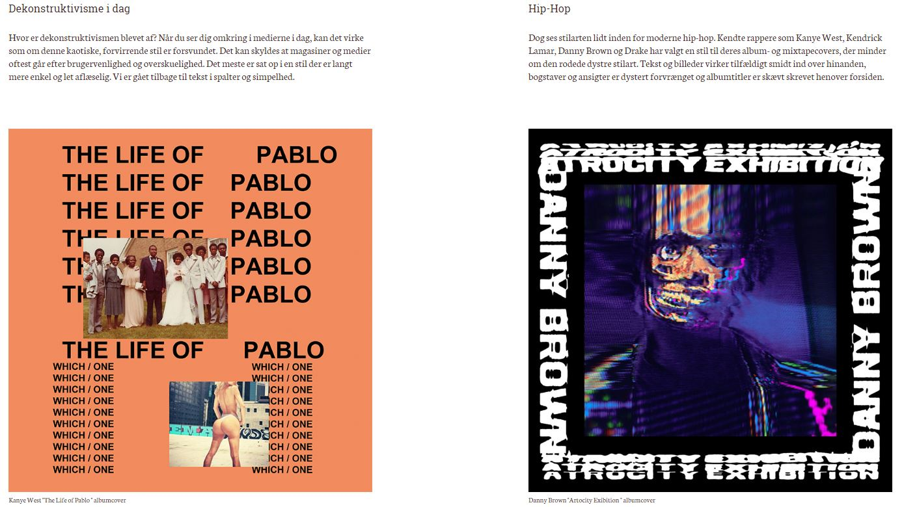

Gennem 5 moduler arbejdede jeg med stilarten dekonstruktivisme både individuelt og i gruppe. Jeg analyserede stilarten ved hjælp af den teori jeg havde tilegnet mig om de centrale principper for digitalt grafisk design - bl.a. farver (colourwheel), komposition og typografi. Derudover udviklede vi grafik til vores website, der skulle kodes i programmet Brackets. Forsiden skulle være et relevant billede du selv har lavet i photoshop.
De grundlæggende ting indenfor HTML og CSS, såsom flexbox, tags og classes, blev taget i brug for at få websitet til at ligne det givne layoutdiagram og den dokumentation af mit design jeg havde lavet i Indesign. Det var yderst vigtigt at sikre websitets kvalitet, der blev derfor testet ved hjælp af ” validator.w3.org”.